pacman::p_load(sf, spatstat, tmap, tidyverse)02B: Second Order Spatial Points Analysis Methods
Second-order spatial point pattern analysis offers a framework for investigating inter-point spatial dependencies, extending beyond first-order intensity metrics to identify processes of spatial clustering, dispersion or complete spatial randomness (CSR). Utilising the spatstat package in R, this exercise will analyse the spatial point processes of childcare center in Singapore.
In this assignment, I will be using 2nd-SPAA to answer two questions:
- Are the childcare centres in Singapore randomly distributed throughout the country?
- If the answer is no, then where are the locations with higher concentration of childcare centres?
Similar to exercise 02A, I will be using the following two data sets:
- Child Care Services data from data.gov.sg, a point feature data providing both location and attribute information of childcare centres.
- Master Plan 2019 Subzone Boundary (No Sea), a polygon feature data providing information of URA’s 2019 Master Plan’s planning subzone boundary data.
1. Importing and Wrangling Geospatial Data Sets
I will first install the relevant R packages.
I will next import the MasterPlan2019SubzoneBoundaryNoSea GEOJSON file as mpsz_sfand transform the EPSG to 3414.
mpsz_sf <- st_read("data/MasterPlan2019SubzoneBoundaryNoSea.geojson") %>%
st_zm(drop = TRUE, what = "ZM") %>%
st_transform(crs = 3414) %>%
select(REGION_N, PLN_AREA_N, SUBZONE_N, SUBZONE_C)Reading layer `URA_MP19_SUBZONE_NO_SEA_PL' from data source
`C:\kayc134\ISSS626_kayc\Hands-on_Ex\Hands-on_Ex02\data\MasterPlan2019SubzoneBoundaryNoSea.geojson'
using driver `GeoJSON'
Simple feature collection with 332 features and 13 fields
Geometry type: MULTIPOLYGON
Dimension: XY
Bounding box: xmin: 103.6057 ymin: 1.158699 xmax: 104.0885 ymax: 1.470775
Geodetic CRS: WGS 84mpsz_cl <- mpsz_sf %>%
filter(SUBZONE_N != "SOUTHERN GROUP",
PLN_AREA_N != "WESTERN ISLANDS",
PLN_AREA_N != "NORTH-EASTERN ISLANDS") %>%
filter(!st_is_empty(.)) %>%
st_make_valid()
write_rds(mpsz_cl, "data/mpsz_cl.rds")I will now import the Childcare Service GeoJSON file as an sf data frame called childcare_sf and transform the EPSG to 3414.
childcare_sf <- st_read("data/ChildCareServices.geojson")%>%
st_transform(crs = 3414)Reading layer `CHILDCARE' from data source
`C:\kayc134\ISSS626_kayc\Hands-on_Ex\Hands-on_Ex02\data\ChildCareServices.geojson'
using driver `GeoJSON'
Simple feature collection with 1925 features and 16 fields
Geometry type: POINT
Dimension: XY
Bounding box: xmin: 103.6878 ymin: 1.247759 xmax: 103.9897 ymax: 1.462134
Geodetic CRS: WGS 84spatstat requires the point event data in ppp object form. I will now be converting childcare_sf to a ppp format childcare_ppp.
childcare_ppp <- as.ppp(childcare_sf)I will extract the target planning areas, i.e., Punggol, Tampines Chua Chu Kang and Jurong West.
pg <- mpsz_cl %>%
filter(PLN_AREA_N == "PUNGGOL")
tm <- mpsz_cl %>%
filter(PLN_AREA_N == "TAMPINES")
ck <- mpsz_cl %>%
filter(PLN_AREA_N == "CHOA CHU KANG")
jw <- mpsz_cl %>%
filter(PLN_AREA_N == "JURONG WEST")Next, I will convert these sf objects into owin objects that is required by spatstat and combine the point events objects and owin objects.
pg_owin = as.owin(pg)
tm_owin = as.owin(tm)
ck_owin = as.owin(ck)
jw_owin = as.owin(jw)childcare_pg_ppp = childcare_ppp[pg_owin]
childcare_tm_ppp = childcare_ppp[tm_owin]
childcare_ck_ppp = childcare_ppp[ck_owin]
childcare_jw_ppp = childcare_ppp[jw_owin]Next, rescale.ppp() function is used to transform the unit of measurement from meter to kilometer.
childcare_pg_ppp.km = rescale.ppp(childcare_pg_ppp, 1000, "km")
childcare_tm_ppp.km = rescale.ppp(childcare_tm_ppp, 1000, "km")
childcare_ck_ppp.km = rescale.ppp(childcare_ck_ppp, 1000, "km")
childcare_jw_ppp.km = rescale.ppp(childcare_jw_ppp, 1000, "km")I will now plot these four areas and the locations of the childcare centres.
par(mfrow=c(2,2))
plot(unmark(childcare_pg_ppp.km),
main="Punggol")
plot(unmark(childcare_tm_ppp.km),
main="Tampines")
plot(unmark(childcare_ck_ppp.km),
main="Choa Chu Kang")
plot(unmark(childcare_jw_ppp.km),
main="Jurong West")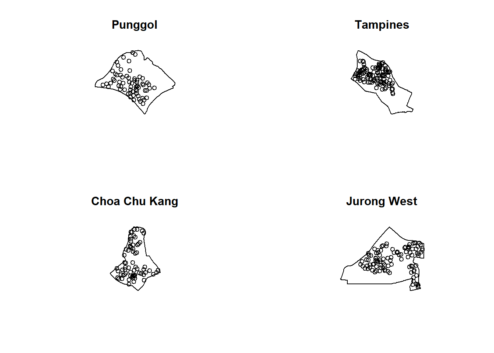
2. Second-Order Spatial Point Patterns Analysis
2.1 Analysing Spatial Point Process Using G Function
The G function measures the distribution of the distances from an arbitrary event to its nearest event. In this section, I will compute G-function estimation by using Gest() of spatstat package. I will also be performing the Monte Carlo simulation test using envelope() of spatstat package.
NoteNote
The G function is cumulative and increases as the distance increases. We can obtain information on point pattern clusters based on the shape of the G function, i.e., G function increases rapidly at short distances for clustered points, and increases slowly up to the distance which most points are spaced before increasing rapidly if points are dispersed.
Monte Carlo Simulation (MCS) is a computational technique that uses random sampling and probability distributions to model complex systems under uncertainty (Oshan, 2025).
In urban planning, MCS serves as a critical tool for modeling spatial point patterns, land-use dynamics, and service demand under shifting socio-demographic conditions (Oshan, 2025). When applied to the distribution of childcare centres in Singapore, MCS allows planners to test for CSR and run simulation models in a location. Through this, we can determine whether clusters or gaps are significant events or random, leading to more robust facility planning.
2.1.1 Choa Chu Kang planning area
set.seed(1234)G_CK = Gest(childcare_ck_ppp, correction = "border")
plot(G_CK, xlim=c(0,500))
NoteNote
The black line rises rapidly at a short distance and is mostly above the red line (Poisson process), thus suggesting a clustered pattern.
To confirm the observed spatial patterns above, I will conduct a hypothesis test using the Monte Carlo simulation. The hypothesis and test are as follows:
Ho = The distribution of childcare services at Choa Chu Kang are randomly distributed.
H1= The distribution of childcare services at Choa Chu Kang are not randomly distributed.
The null hypothesis will be rejected if p-value is smaller than the alpha value of 0.001.
G_CK.csr <- envelope(childcare_ck_ppp, Gest, nsim = 999)Generating 999 simulated realisations of CSR ...
1, 2, 3, ......10.........20.........30.........40.........50.........60..
.......70.........80.........90.........100.........110.........120.........130
.........140.........150.........160.........170.........180.........190........
.200.........210.........220.........230.........240.........250.........260......
...270.........280.........290.........300.........310.........320.........330....
.....340.........350.........360.........370.........380.........390.........400..
.......410.........420.........430.........440.........450.........460.........470
.........480.........490.........500.........510.........520.........530........
.540.........550.........560.........570.........580.........590.........600......
...610.........620.........630.........640.........650.........660.........670....
.....680.........690.........700.........710.........720.........730.........740..
.......750.........760.........770.........780.........790.........800.........810
.........820.........830.........840.........850.........860.........870........
.880.........890.........900.........910.........920.........930.........940......
...950.........960.........970.........980.........990........
999.
Done.plot(G_CK.csr)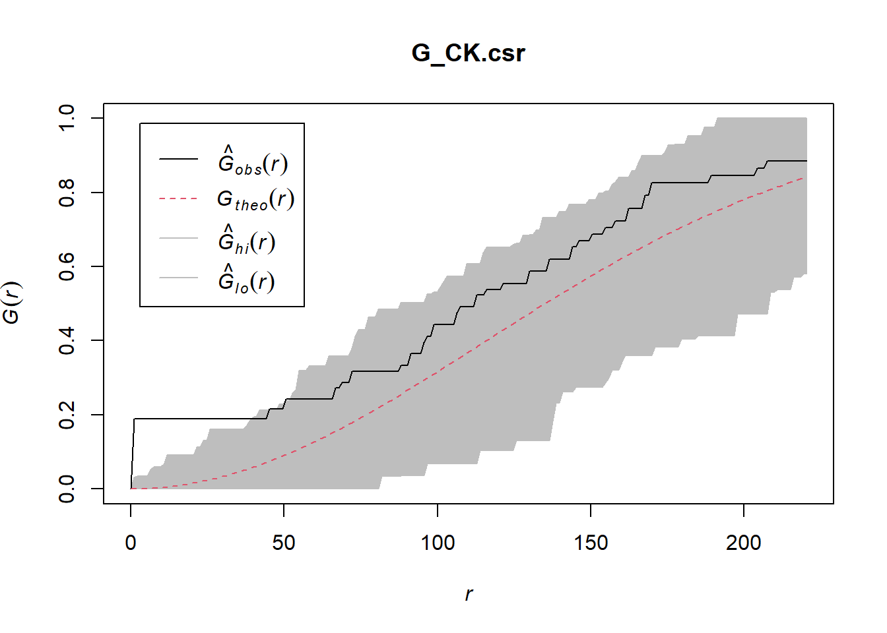
NoteNote
Although the black line rises rapidly and lies above the grey shaded envelope at a short distance of < 50 meters, it remains within the envelope at longer distances.
We fail to reject the null hypothesis as the distribution of nearest-neighbor distances does not show statistically significant deviation from CRS.
2.1.2 Tampines planning area
G_tm = Gest(childcare_tm_ppp, correction = "best")
plot(G_tm)
NoteNote
The black line rises rapidly at a short distance and is entirely above the red line (Poisson process), thus suggesting a clustered pattern.
To confirm the observed spatial patterns above, I will conduct a hypothesis test using the Monte Carlo simulation. The hypothesis and test are as follows:
Ho = The distribution of childcare services at Tampines are randomly distributed.
H1= The distribution of childcare services at Tampines are not randomly distributed.
G_tm.csr <- envelope(childcare_tm_ppp, Gest, correction = "all", nsim = 999)Generating 999 simulated realisations of CSR ...
1, 2, 3, ......10.........20.........30.........40.........50.........60..
.......70.........80.........90.........100.........110.........120.........130
.........140.........150.........160.........170.........180.........190........
.200.........210.........220.........230.........240.........250.........260......
...270.........280.........290.........300.........310.........320.........330....
.....340.........350.........360.........370.........380.........390.........400..
.......410.........420.........430.........440.........450.........460.........470
.........480.........490.........500.........510.........520.........530........
.540.........550.........560.........570.........580.........590.........600......
...610.........620.........630.........640.........650.........660.........670....
.....680.........690.........700.........710.........720.........730.........740..
.......750.........760.........770.........780.........790.........800.........810
.........820.........830.........840.........850.........860.........870........
.880.........890.........900.........910.........920.........930.........940......
...950.........960.........970.........980.........990........
999.
Done.plot(G_tm.csr)
NoteNote
Although the black line rises rapidly and lies above the grey shaded envelope at a short distance of slight above 50 meters, it then threads in and out of the top of the envelope for the remaining distances.
We fail to reject the null hypothesis as the distribution of nearest-neighbor distances does not show statistically significant deviation from CSR
2.2 Analysing Spatial Point Process Using F Function
The F function estimates the empty space function F(r) or its hazard rate h(r) from a point pattern in a window of arbitrary shape. In this section, I will compute the F function estimation by using Fest() of spatstat package. I will also be performing the Monte Carlo simulation test using envelope() of spatstat package.
2.2.1. Choa Chu Kang planning area
F_CK = Fest(childcare_ck_ppp)
plot(F_CK)
F_CK_best = Fest(childcare_ck_ppp, correction = "best")
plot(F_CK_best)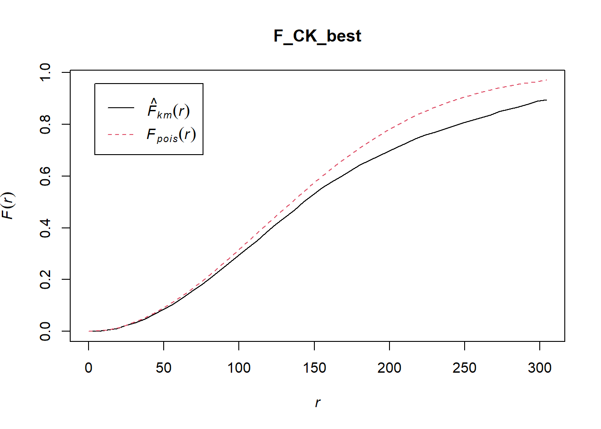
NoteNote
The F function is plotted with and without the correction = “best” argument as F_CK and F_CK_best. This argument for edge correction is optional in estimating F(r) and includes “Ripley”, “border” and “best”. Alternatively, there is also correction =“all”, which selects all options.
The exercise guide uses the correction = “best” argument for 2.2.2 but not 2.2.1. However, I will plot F(r) with and without the argument to analyse them.
F_CK
Red line: Theoretical function (Poisson reference) Black line: Observed data
The black line stays close to and below the blue line at distances above 50 meters, suggesting clustering.
F_CK_best
Blue line: Theoretical function (Poisson reference) Black line: Observed data
Similar to F_CK, the black line stays close to and below the red line at distances above 50 meters, suggesting clustering.
To confirm the observed spatial patterns above, I will conduct a hypothesis test using the Monte Carlo simulation. The hypothesis and test are as follows:
Ho = The distribution of childcare services at Choa Chu Kang are randomly distributed.
H1= The distribution of childcare services at Choa Chu Kang are not randomly distributed.
F_CK.csr <- envelope(childcare_ck_ppp, Fest, nsim = 999)Generating 999 simulated realisations of CSR ...
1, 2, 3, ......10.........20.........30.........40.........50.........60..
.......70.........80.........90.........100.........110.........120.........130
.........140.........150.........160.........170.........180.........190........
.200.........210.........220.........230.........240.........250.........260......
...270.........280.........290.........300.........310.........320.........330....
.....340.........350.........360.........370.........380.........390.........400..
.......410.........420.........430.........440.........450.........460.........470
.........480.........490.........500.........510.........520.........530........
.540.........550.........560.........570.........580.........590.........600......
...610.........620.........630.........640.........650.........660.........670....
.....680.........690.........700.........710.........720.........730.........740..
.......750.........760.........770.........780.........790.........800.........810
.........820.........830.........840.........850.........860.........870........
.880.........890.........900.........910.........920.........930.........940......
...950.........960.........970.........980.........990........
999.
Done.plot(F_CK.csr)
NoteNote
The black line falls entirely within the simulated envelope, meaning there is no statistically significant departure from CSR.
We fail to reject the null hypothesis at the alpha value of 0.001.
2.2.2 Tampines planning area
F_tm = Fest(childcare_tm_ppp)
plot(F_tm)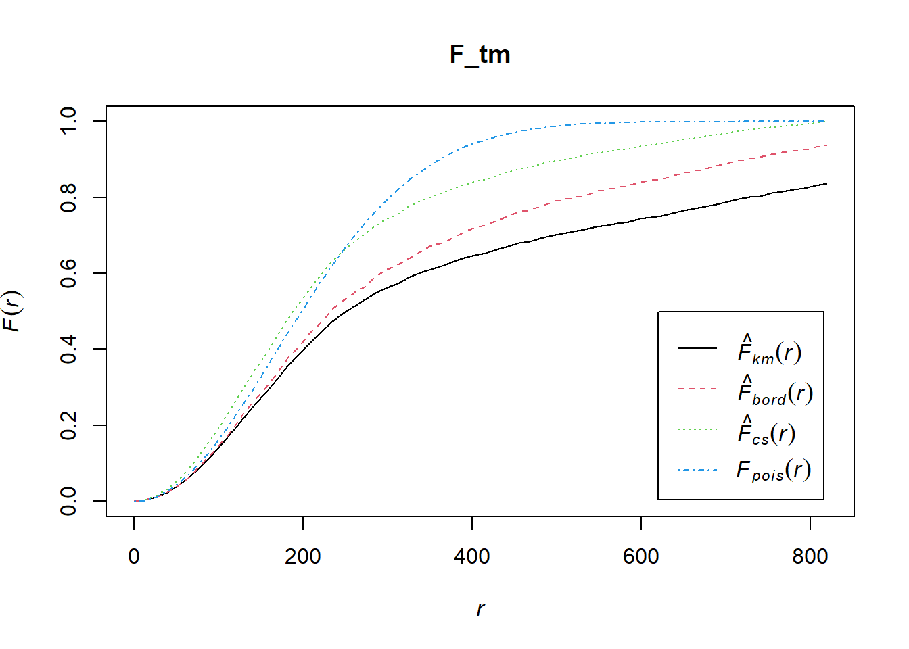
F_tm_best = Fest(childcare_tm_ppp, correction = "best")
plot(F_tm_best)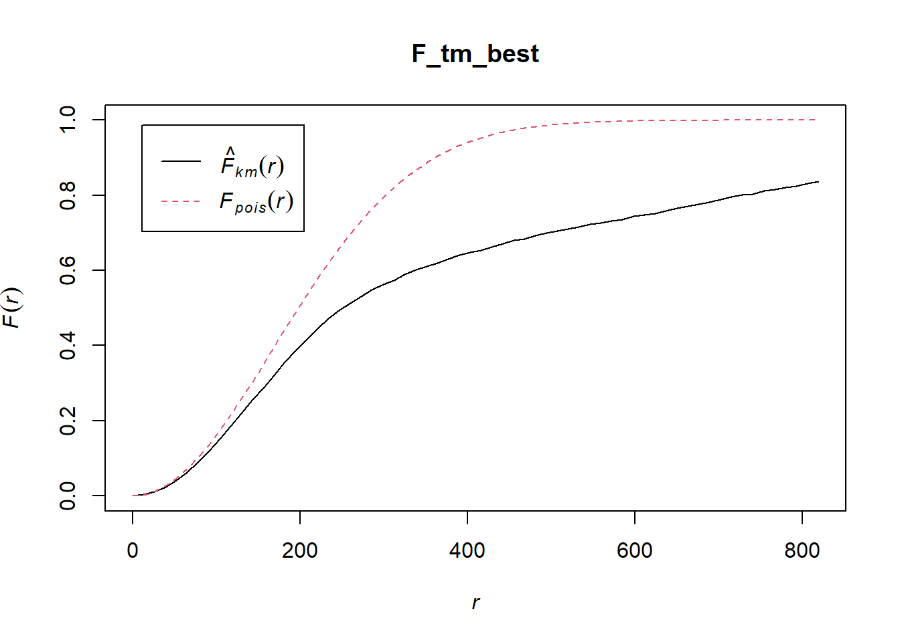
NoteNote
The F function is plotted with and without the correction = “best” argument as F_tm and F_tm_best.
The exercise guide uses the correction = “best” argument for 2.2.2 but not 2.2.1. However, I will plot F(r) with and without the argument to analyse them.
F_tm
Red line: Theoretical function (Poisson reference) Black line: Observed data
The black line stays well below the blue line, suggesting clustering.
F_tm_best
Blue line: Theoretical function (Poisson reference) Black line: Observed data
Similar to F_tm, the black line stays below the red line, especially just before 200 meters, suggesting clustering.
To confirm the observed spatial patterns above, I will conduct a hypothesis test using the Monte Carlo simulation. The hypothesis and test are as follows:
Ho = The distribution of childcare services at Tampines are randomly distributed.
H1= The distribution of childcare services at Tampines are not randomly distributed.
F_tm.csr <- envelope(childcare_tm_ppp, Fest, correction = "all", nsim = 999)Generating 999 simulated realisations of CSR ...
1, 2, 3, ......10.........20.........30.........40.........50.........60..
.......70.........80.........90.........100.........110.........120.........130
.........140.........150.........160.........170.........180.........190........
.200.........210.........220.........230.........240.........250.........260......
...270.........280.........290.........300.........310.........320.........330....
.....340.........350.........360.........370.........380.........390.........400..
.......410.........420.........430.........440.........450.........460.........470
.........480.........490.........500.........510.........520.........530........
.540.........550.........560.........570.........580.........590.........600......
...610.........620.........630.........640.........650.........660.........670....
.....680.........690.........700.........710.........720.........730.........740..
.......750.........760.........770.........780.........790.........800.........810
.........820.........830.........840.........850.........860.........870........
.880.........890.........900.........910.........920.........930.........940......
...950.........960.........970.........980.........990........
999.
Done.plot(F_tm.csr)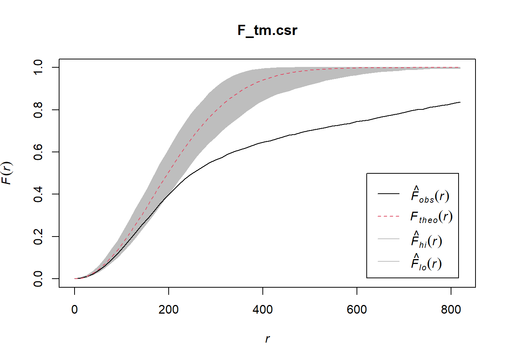
NoteNote
The black line falls below the simulated envelope slightly after 200 meters, suggesting statistically significant departure from CSR and indicates clustering.
We will reject the null hypothesis at the alpha value of 0.001.
2.3 Analysing Spatial Point Process Using K Function
K function measures the number of events found up to a given distance of any particular event. In this section, I will compute K-function estimates by using Kest() of spatstat package.
2.3.1 Choa Chu Kang planning area
K_ck = Kest(childcare_ck_ppp, correction = "Ripley")
plot(K_ck, . -r ~ r, ylab= "K(d)-r", xlab = "d(m)")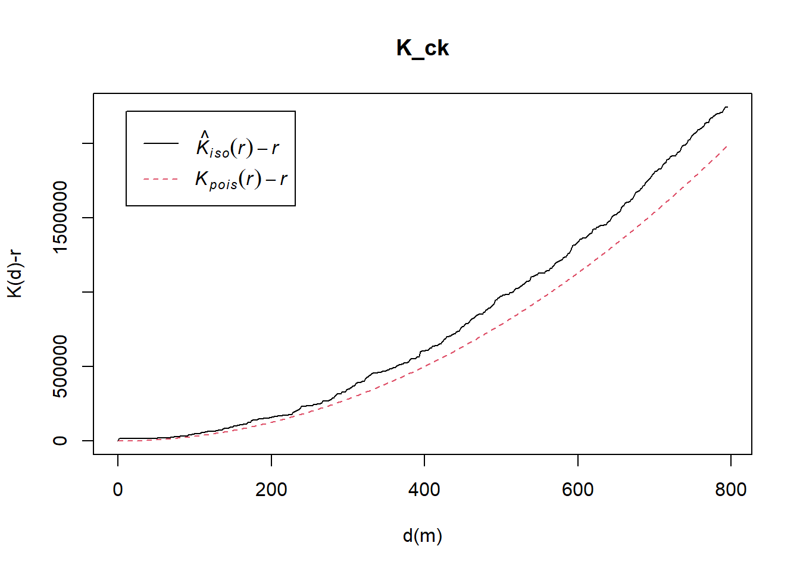
NoteNote
The black line stays above the red line throughout, suggesting clustering.
To confirm the observed spatial patterns above, I will conduct a hypothesis test using the Monte Carlo simulation. The hypothesis and test are as follows:
Ho = The distribution of childcare services at Choa Chu Kang are randomly distributed.
H1= The distribution of childcare services at Choa Chu Kang are not randomly distributed.
K_ck.csr <- envelope(childcare_ck_ppp, Kest, nsim = 99, rank = 1, glocal=TRUE)Generating 99 simulated realisations of CSR ...
1, 2, 3, 4, 5, 6, 7, 8, 9, 10, 11, 12, 13, 14, 15, 16, 17, 18, 19, 20,
21, 22, 23, 24, 25, 26, 27, 28, 29, 30, 31, 32, 33, 34, 35, 36, 37, 38, 39, 40,
41, 42, 43, 44, 45, 46, 47, 48, 49, 50, 51, 52, 53, 54, 55, 56, 57, 58, 59, 60,
61, 62, 63, 64, 65, 66, 67, 68, 69, 70, 71, 72, 73, 74, 75, 76, 77, 78, 79, 80,
81, 82, 83, 84, 85, 86, 87, 88, 89, 90, 91, 92, 93, 94, 95, 96, 97, 98,
99.
Done.plot(K_ck.csr, . - r ~ r, xlab="d", ylab="K(d)-r")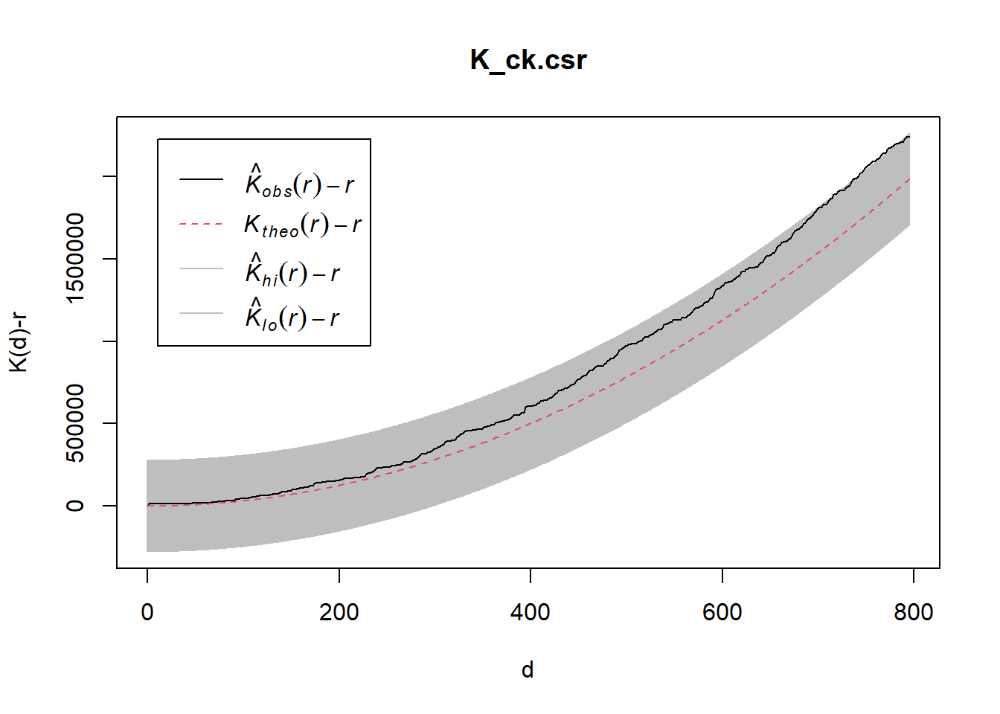
NoteNote
Unlike the earlier G and F function tests, the K function tests has a glocal=TRUE argument. This evaluates whether the observed spatial point pattern deviates from the simulation globally across all distance values (r) while tracking local significance.
The black observed line borders at the top of the grey envelop while not fully lying outside, meaning there is no statistically significant departure from CSR.
We fail to reject the null hypothesis at the alpha value of 0.001.
2.3.2 Tampines planning area
K_tm = Kest(childcare_tm_ppp, correction = "Ripley")
plot(K_tm, . -r ~ r,
ylab= "K(d)-r", xlab = "d(m)",
xlim=c(0,1000))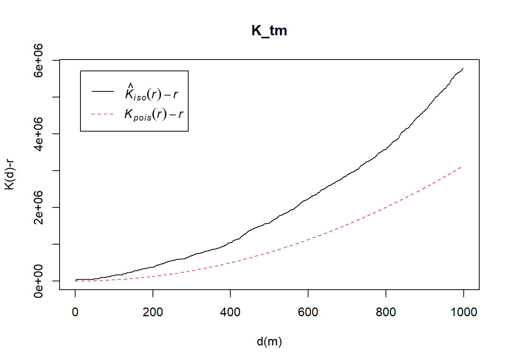
NoteNote
The black line stays above the red line throughout, suggesting clustering.
To confirm the observed spatial patterns above, I will conduct a hypothesis test using the Monte Carlo simulation. The hypothesis and test are as follows:
Ho = The distribution of childcare services at Tampines are randomly distributed.
H1= The distribution of childcare services at Tampines are not randomly distributed.
K_tm.csr <- envelope(childcare_tm_ppp, Kest, nsim = 99, rank = 1, glocal=TRUE)Generating 99 simulated realisations of CSR ...
1, 2, 3, 4, 5, 6, 7, 8, 9, 10, 11, 12, 13, 14, 15, 16, 17, 18, 19, 20,
21, 22, 23, 24, 25, 26, 27, 28, 29, 30, 31, 32, 33, 34, 35, 36, 37, 38, 39, 40,
41, 42, 43, 44, 45, 46, 47, 48, 49, 50, 51, 52, 53, 54, 55, 56, 57, 58, 59, 60,
61, 62, 63, 64, 65, 66, 67, 68, 69, 70, 71, 72, 73, 74, 75, 76, 77, 78, 79, 80,
81, 82, 83, 84, 85, 86, 87, 88, 89, 90, 91, 92, 93, 94, 95, 96, 97, 98,
99.
Done.plot(K_tm.csr, . - r ~ r,
xlab="d", ylab="K(d)-r", xlim=c(0,500))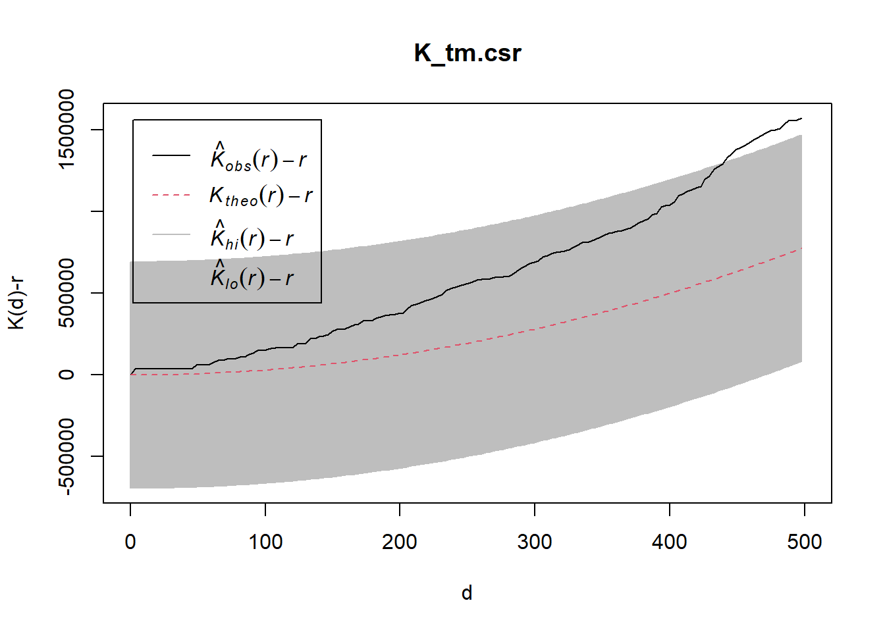
NoteNote
The black line lies above the simulated envelope throughout, suggesting statistically significant departure from CSR and indicates clustering.
We will reject the null hypothesis at the alpha value of 0.001.
2.4 Analysing Spatial Point Process Using L Function
L function normalises the K function through a square-root transformation, making it easier to interpret visually. I will be using Lest() of spatstat package.
2.4.1 Choa Chu Kang planning area
L_ck = Lest(childcare_ck_ppp, correction = "Ripley")
plot(L_ck, . -r ~ r,
ylab= "L(d)-r", xlab = "d(m)")
NoteNote
By plotting L(r) - r against r, we will have the Poisson red line centred at zero and the data line is jagged. As the data line is above the red line, it suggests clustering.
Similar to the K function tests, the glocal=TRUE argument is used for L function tests.
To confirm the observed spatial patterns above, I will conduct a hypothesis test using the Monte Carlo simulation. The hypothesis and test are as follows:
Ho = The distribution of childcare services at Choa Chu Kang are randomly distributed.
H1= The distribution of childcare services at Choa Chu Kang are not randomly distributed.
L_ck.csr <- envelope(childcare_ck_ppp, Lest, nsim = 99, rank = 1, glocal=TRUE)Generating 99 simulated realisations of CSR ...
1, 2, 3, 4, 5, 6, 7, 8, 9, 10, 11, 12, 13, 14, 15, 16, 17, 18, 19, 20,
21, 22, 23, 24, 25, 26, 27, 28, 29, 30, 31, 32, 33, 34, 35, 36, 37, 38, 39, 40,
41, 42, 43, 44, 45, 46, 47, 48, 49, 50, 51, 52, 53, 54, 55, 56, 57, 58, 59, 60,
61, 62, 63, 64, 65, 66, 67, 68, 69, 70, 71, 72, 73, 74, 75, 76, 77, 78, 79, 80,
81, 82, 83, 84, 85, 86, 87, 88, 89, 90, 91, 92, 93, 94, 95, 96, 97, 98,
99.
Done.plot(L_ck.csr, . - r ~ r, xlab="d", ylab="L(d)-r")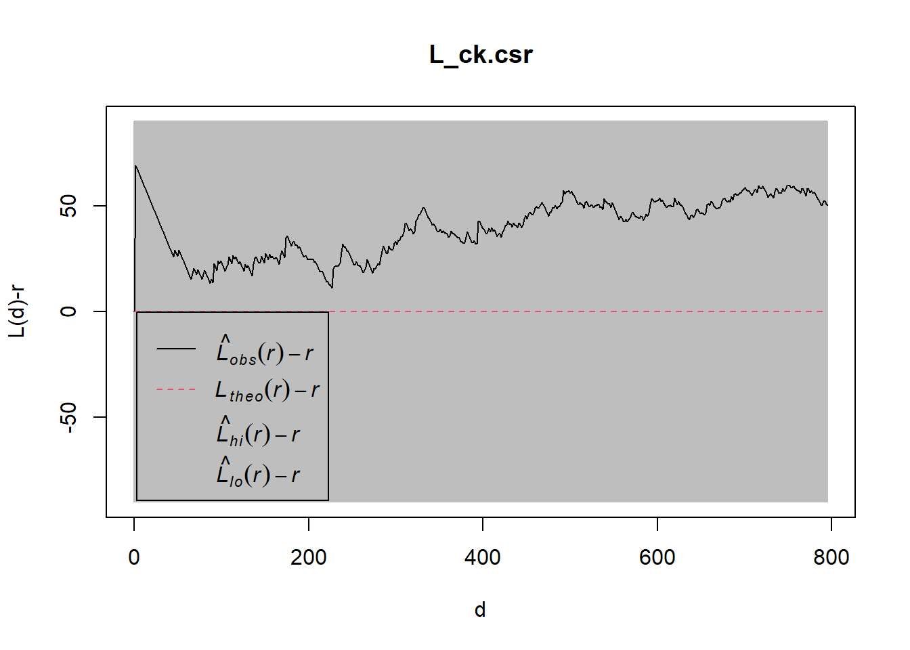
NoteNote
The black line is above the grey envelop most of the time, suggesting statistically significant departure from CSR and indicates clustering.
We will reject the null hypothesis at the alpha value of 0.001.
2.4.2 Tampines planning area
L_tm = Lest(childcare_tm_ppp, correction = "Ripley")
plot(L_tm, . -r ~ r,
ylab= "L(d)-r", xlab = "d(m)",
xlim=c(0,1000))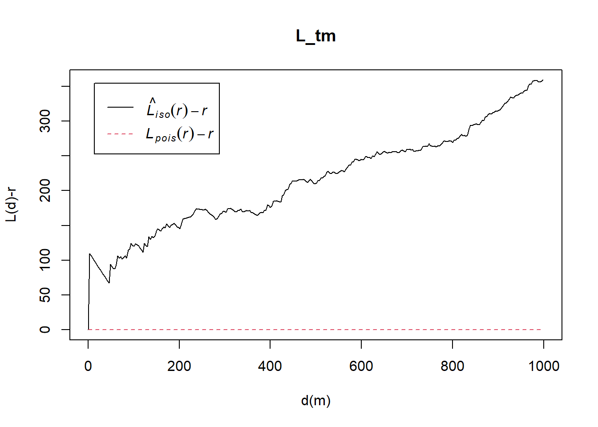
NoteNote
By plotting L(r) - r against r, we will have the Poisson red line centred at zero and the data line is jagged. As the data line is above the red line, it suggests clustering.
To confirm the observed spatial patterns above, I will conduct a hypothesis test using the Monte Carlo simulation. The hypothesis and test are as follows:
Ho = The distribution of childcare services at Tampines are randomly distributed.
H1= The distribution of childcare services at Tampines are not randomly distributed.
L_tm.csr <- envelope(childcare_tm_ppp, Lest, nsim = 99, rank = 1, glocal=TRUE)Generating 99 simulated realisations of CSR ...
1, 2, 3, 4, 5, 6, 7, 8, 9, 10, 11, 12, 13, 14, 15, 16, 17, 18, 19, 20,
21, 22, 23, 24, 25, 26, 27, 28, 29, 30, 31, 32, 33, 34, 35, 36, 37, 38, 39, 40,
41, 42, 43, 44, 45, 46, 47, 48, 49, 50, 51, 52, 53, 54, 55, 56, 57, 58, 59, 60,
61, 62, 63, 64, 65, 66, 67, 68, 69, 70, 71, 72, 73, 74, 75, 76, 77, 78, 79, 80,
81, 82, 83, 84, 85, 86, 87, 88, 89, 90, 91, 92, 93, 94, 95, 96, 97, 98,
99.
Done.plot(L_tm.csr, . - r ~ r,
xlab="d", ylab="L(d)-r", xlim=c(0,500))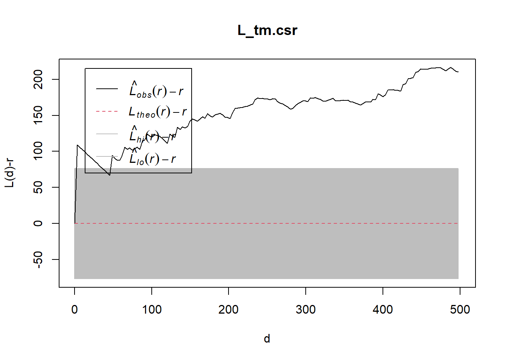
NoteNote
The black line is entirely above the grey envelop, suggesting statistically significant departure from CSR and indicates clustering.
We will reject the null hypothesis at the alpha value of 0.001.
3. Reference
Kam, T. S. 2nd Order Spatial Point Patterns Analysis Methods. R for Geospatial Data Science and Analytics. https://r4gdsa.netlify.app/chap05.html Oshan, T. M. (2025). Monte Carlo Simulation. The Geographic Information Science & Technology Body of Knowledge (2025 Version), John P. Wilson (Ed.). DOI: 10.22224/gistbok/2025.1.26